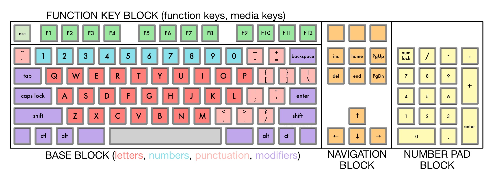
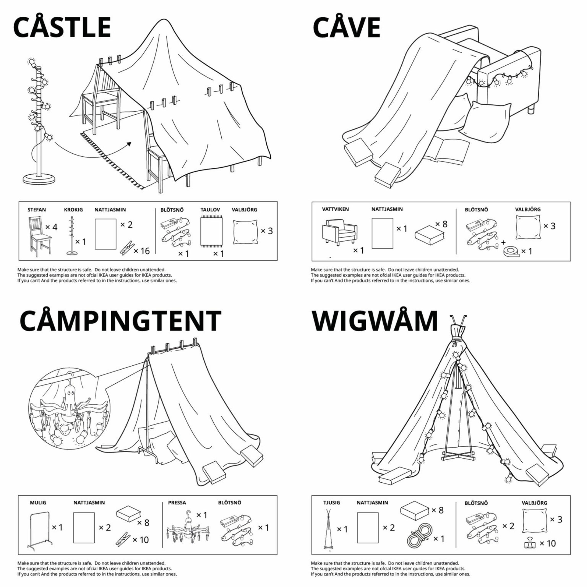

Reading #1: Systems & Complexity
Pt 1
1. What is a good working definition of what a System is and perhaps what it is not?
On miriam dictionary, a system is defined as a regularly interacting or interdependent group of items forming a unified whole. A system is interdependent, so what makes it not a system is if something/item can perform by itself and is independent. A system requires everything to work together as a unified whole to serve a common process. What makes it not a system is if they’re not related and don’t serve a common process.
2. For the 4 system definitions you were to look up please give in your own words what they mean and give an example of them for each case.
- Modularity- parts of a system that has multifunctional uses and also interchangeable. Ex. An example would be a nintendo 3ds, can be played hand held or on the tv. Another example is lego pieces. Can take them apart and create something new. A programming code that can be used as different functions.
- Decomposability- cannot be broken down into smaller components or else it loses its function. Ex. Taking down a tent, elements of periodic table,laptop parts, computer parts.
- Emergence- when smaller components with different processes are team up together, they combine together to form a new process together. Ex. person riding a bike and the bike itself .
- Chaos Theory-unpredicular behavior of dynamic systems that are sensitive to initial conditions and can react in a completely different way. Ex.bouncing a ball
3. Give us your definition of what Tesslation means and give an example you encountered, not mentioned in the reading.
A tessellation is a repetitive pattern of a shape or polygon, that fills the space with no gaps or overlaps. An example is seeing brick walls on houses
4. What is The difference between ideas of Modularity and Tesselation? What are the properties that are in oppostion with each other?
Modularity is different components of a system in which the components can be separated or recombined and tessellation sorta has its limits on how it fills a gap and how it is utilized. f With modularity, the components can be reused again for different purposes.
5. What is the difference between designing something that has Complexity (aperiodic) vs being Uniform (periodic)
Aperiodic doesn’t have a repeating pattern while Uniform doesn’t.
6. Group Activity. Each student will need to Bring in a series of 8 diagrams that show evidence of Modularity, Decomposability, Emergence and Chaos Theory.
Pt 2: System Diagrams

2 system diagrams that have more than 100 elements
2 system diagrams that is something considered living
2 system diagrams that represent something that is not visible or physical


2 system diagrams that represent a system that incorperates modularity
Pt 3: Call Outs
Modularity
Chaos Theory

Decomposibility
Emergence